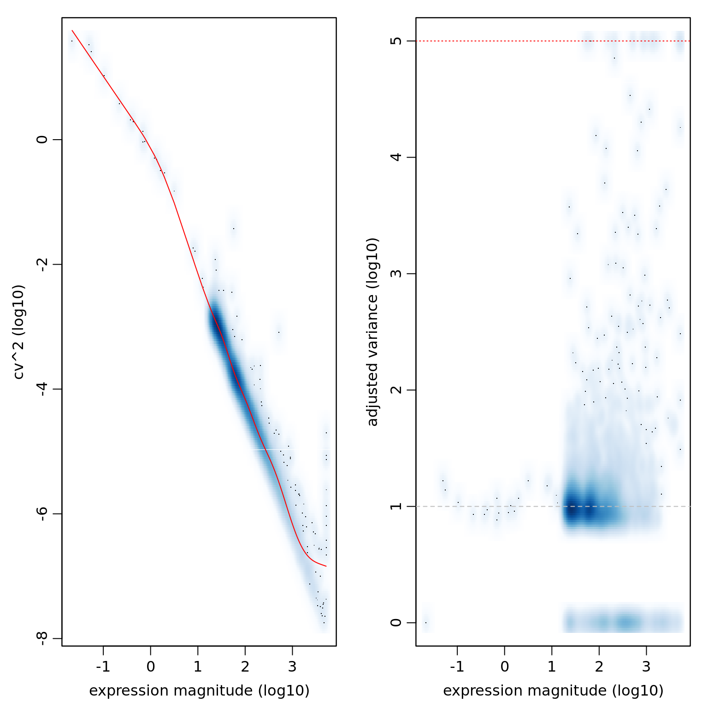
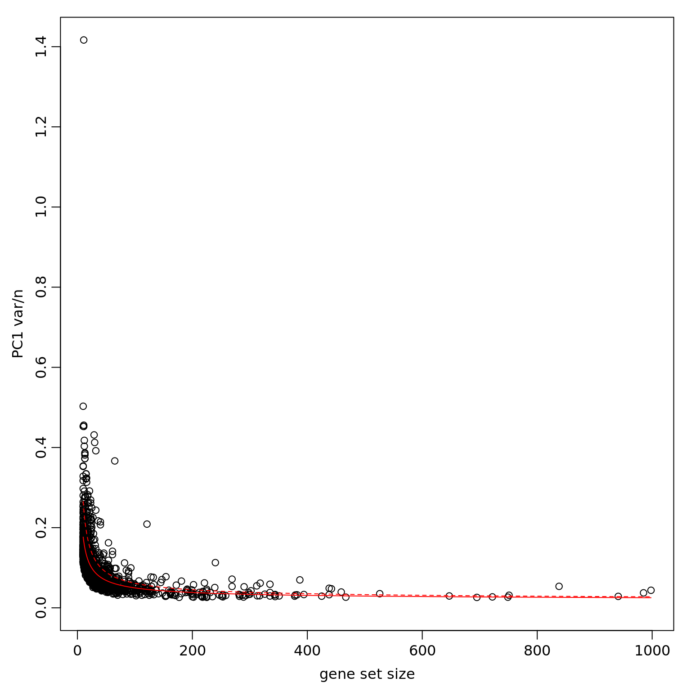
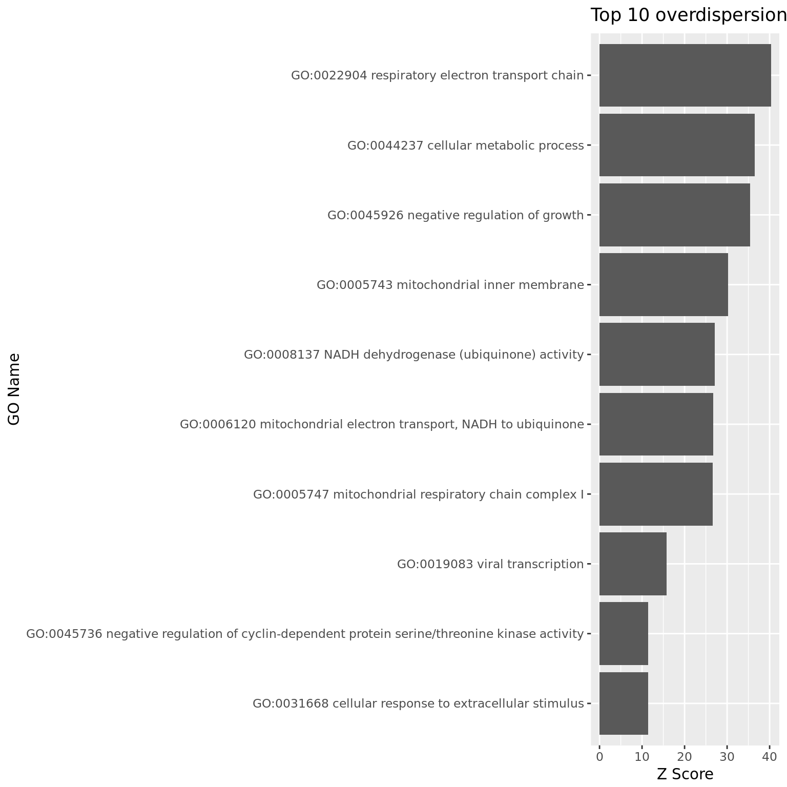
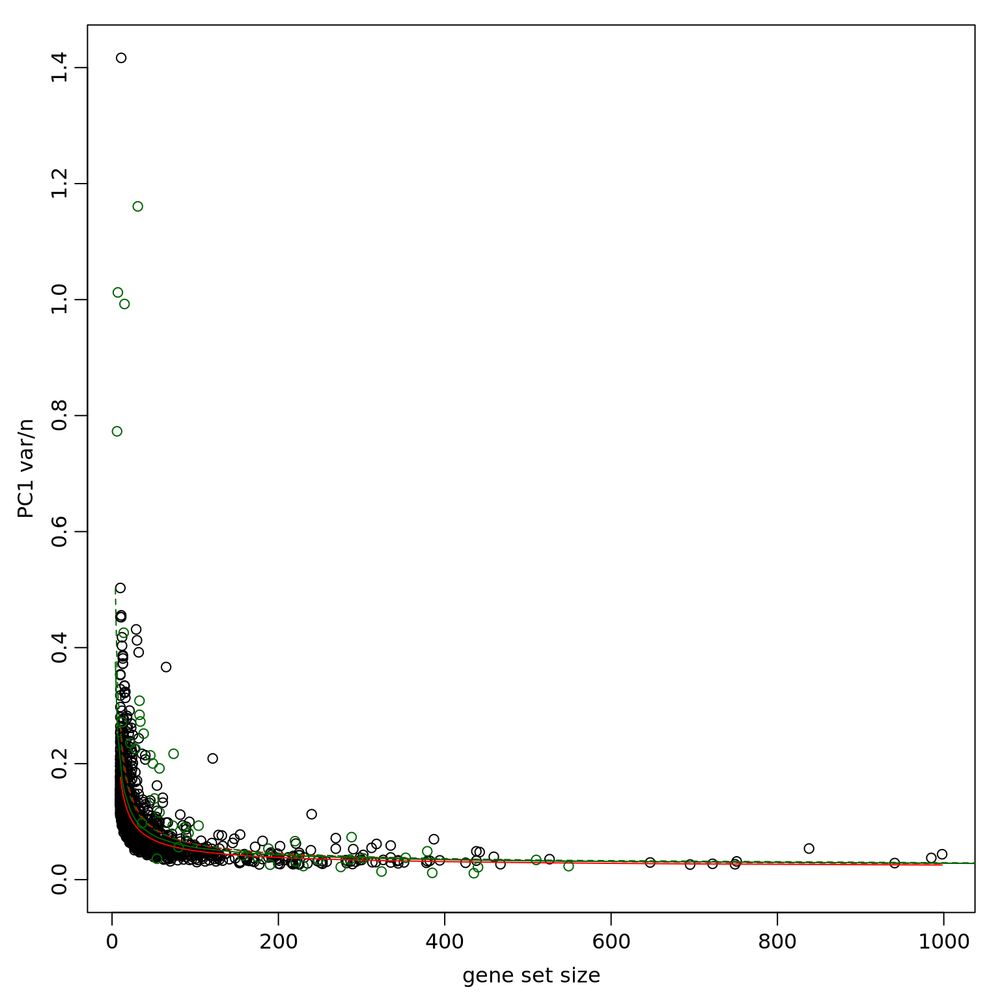
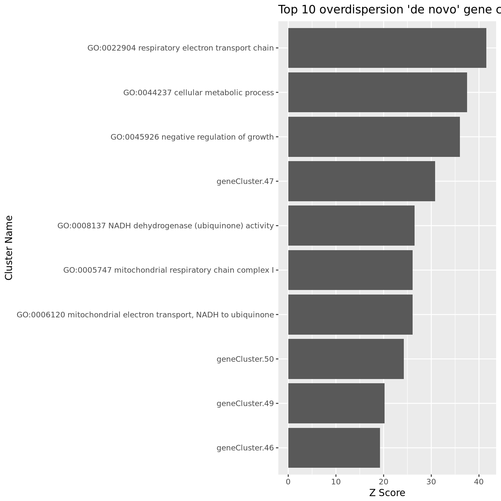
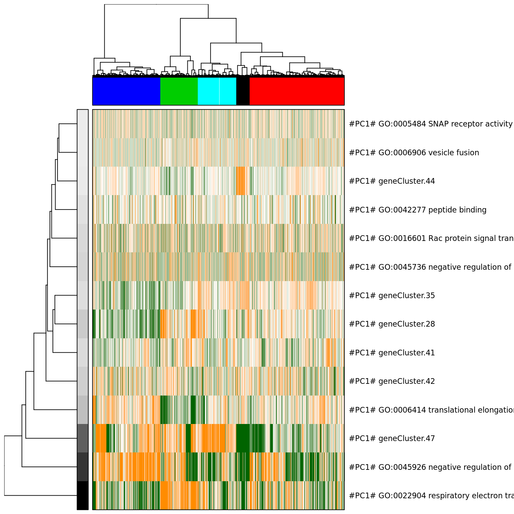
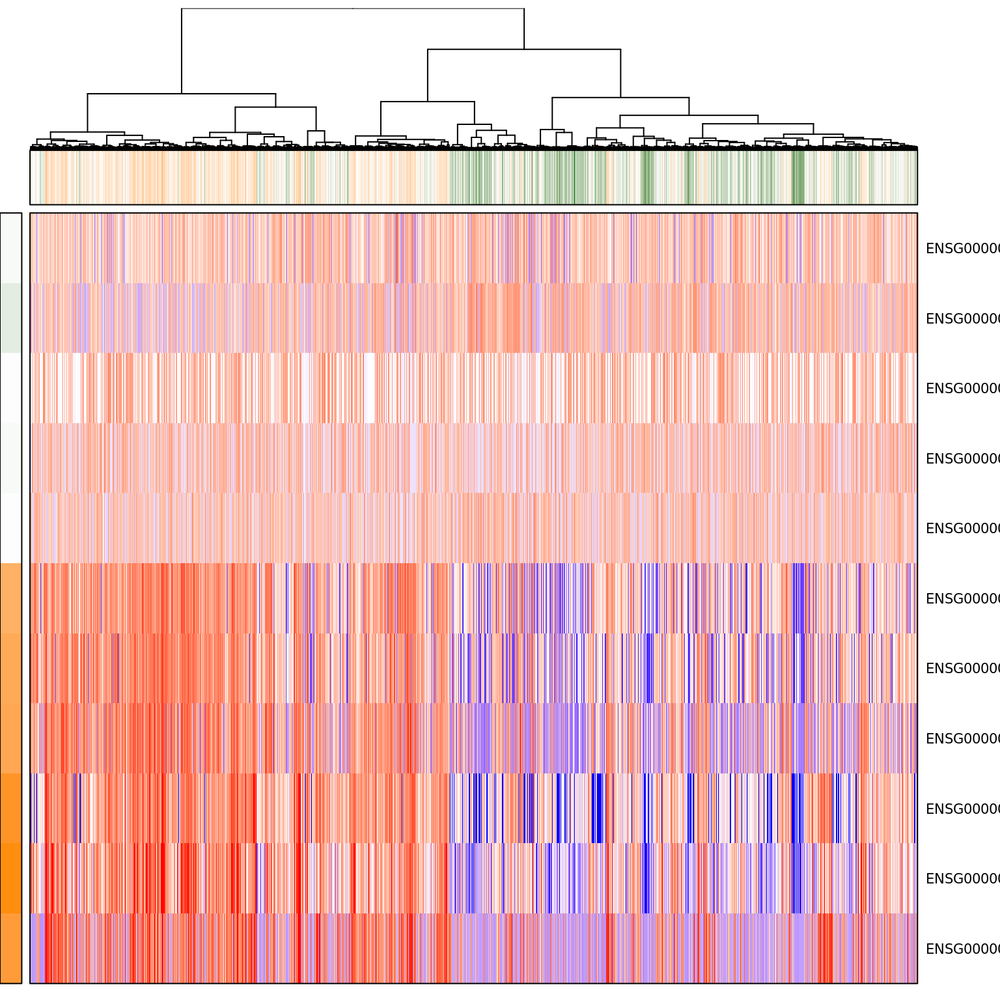
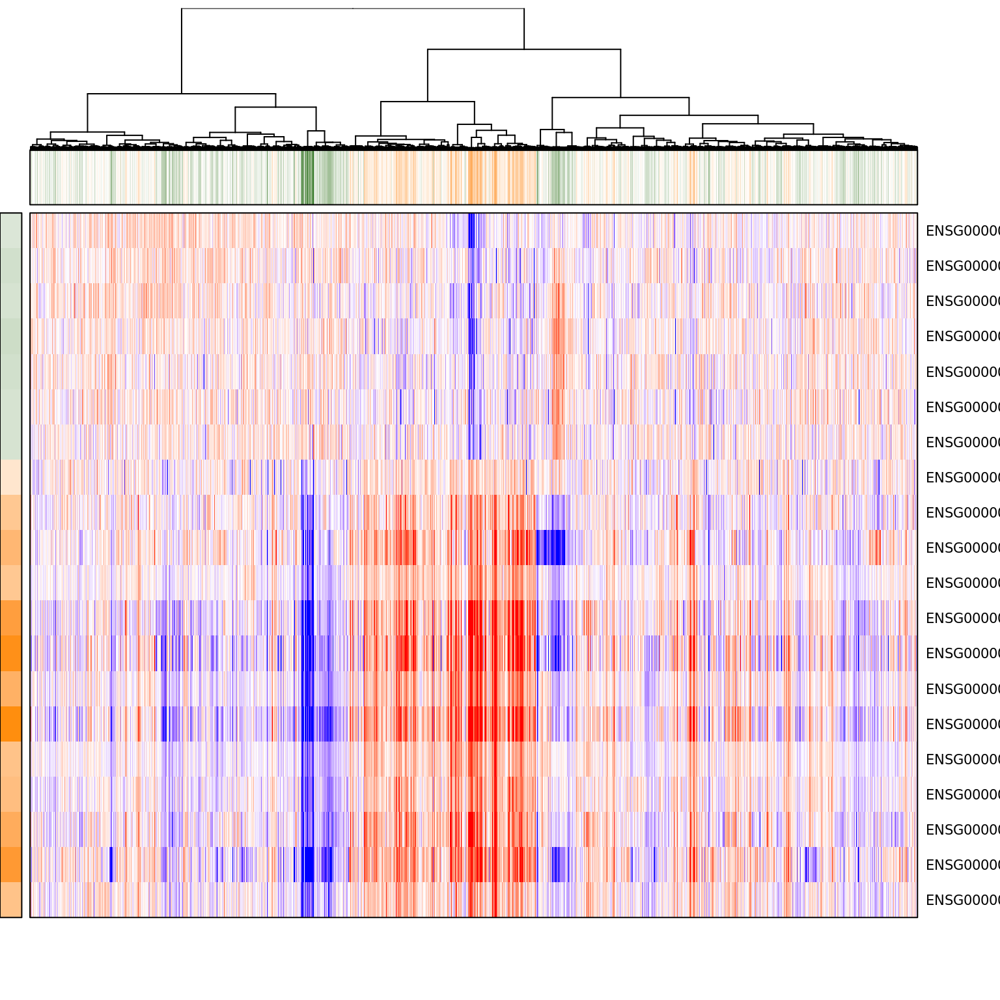
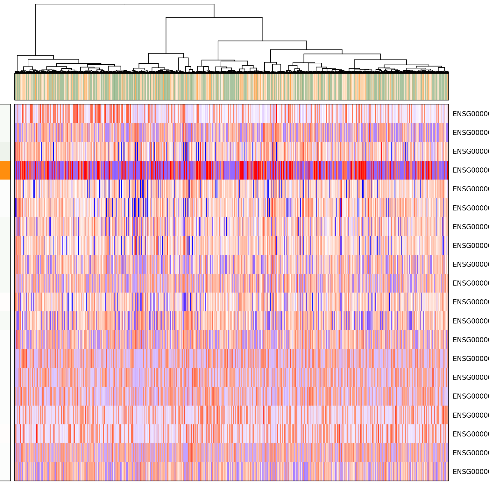
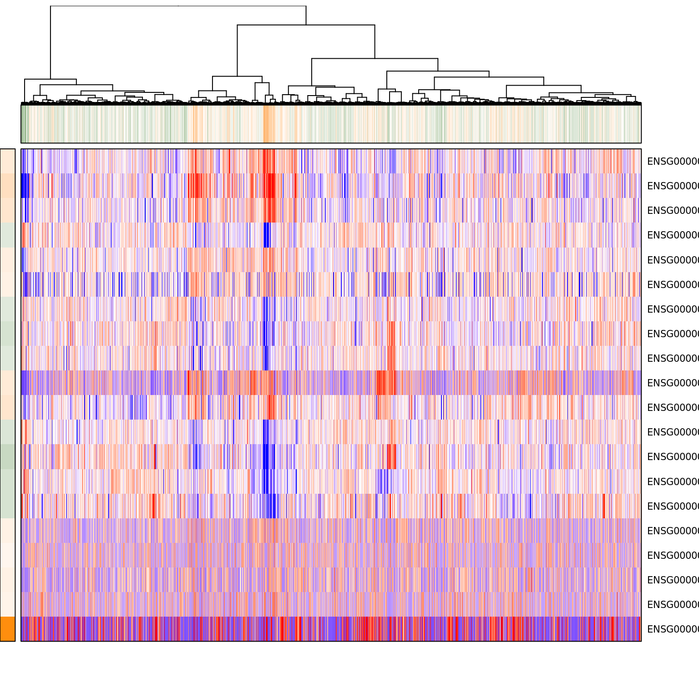

Gene set and pathway overdispersion analysis
Po-Yuan Tung
2018-03-06
Last updated: 2018-03-21
Code version: f11e8f3
The purpose of this analysis is to get an intial idea of what functions are related with (or potentially regulated by) gene expression noise in iPSCs. To do so, we use PAGODA (pathway and gene set overdispersion analysis). This package is part of the SCDE
Setup
library("biomaRt")
library("GO.db")
library("edgeR")
library("ggplot2")
library("knitr")
library("scde")
source("../code/functions.R")
library("Biobase") # has to be loaded last to use `combine`Import data.
eset <- readRDS("../data/eset.rds")
dim(eset)Features Samples
54792 6432 Keep human genes and ERCC
eset <- eset[fData(eset)$source %in% c("H. sapiens", "ERCC") , ]
dim(eset) Features Samples
20419 6432 Only keep high-quality single cells.
quality <- read.table("../data/quality-single-cells.txt", stringsAsFactors = FALSE)
colnames(quality) <- c("sample", "quality")
eset <- eset[, quality$quality]
dim(eset)Features Samples
20419 4901 Only keep genes that passed the filters
genes <- read.table("../data/genes-pass-filter.txt", stringsAsFactors = FALSE)
colnames(genes) <- c("gene", "passed")
eset <- eset[genes$passed, ]Limit cells to batches 2-5 (not all cells in batch 1 had ERCC spike-in added)
eset_data <- exprs(eset)
eset_data_sub <- eset_data[, pData(eset)$batch != "b1"]
dim(eset_data_sub)[1] 10232 4178SCDE
Import data obtained from RCC using sced.R
eset_sub_knn <- readRDS("../data/eset-sub-knn-filtered-b2-b5.rds")
pwpca_eset_dep <-readRDS("../data/pwpca-eset-dep-filtered-b2-b5.rds")
clpca_eset_dep <-readRDS("../data/clpca-eset-dep-filtered-b2-b5.rds")Compute normalized variance
## Fitting error models
#eset_sub_knn <- knn.error.models(eset_data_sub, k = ncol(eset_data_sub)/4, n.cores = 6, min.count.threshold = 1, min.nonfailed = 5, max.model.plots = 10)
## Normalizing variance
varinfo_eset_sub <- pagoda.varnorm(eset_sub_knn, counts = eset_data_sub, trim = 3, max.adj.var = 5, n.cores = 1, plot = TRUE)
## list top overdispersed genes
sort(varinfo_eset_sub$arv, decreasing = TRUE)[1:10]ENSG00000110713 ENSG00000124762 ENSG00000125144 ENSG00000149591
5 5 5 5
ENSG00000158470 ENSG00000176597 ENSG00000177105 ENSG00000187193
5 5 5 5
ENSG00000198518 ENSG00000198727
5 5 ## Controlling for sequencing depth
## control for the gene coverage (estimated as a number of genes with non-zero magnitude per cell) and normalize out that aspect of cell heterogeneity
varinfo_dep <- pagoda.subtract.aspect(varinfo_eset_sub, colSums(eset_data_sub[, rownames(eset_sub_knn)]>0))Evaluate overdispersion of gene sets
# Initialize the connection to the Ensembl BioMart Service
# Available datasets can be listed with
# listDatasets(useMart("ENSEMBL_MART_ENSEMBL", host = "feb2014.archive.ensembl.org"))
# Use mmusculus_gene_ensembl for mouse
ensembl <- useMart("ENSEMBL_MART_ENSEMBL", dataset = "hsapiens_gene_ensembl", host = "feb2014.archive.ensembl.org")
# Constructs a dataframe with two columns: hgnc_symbol and go_id
# If rownames are Ensembl IDs, use ensembl_gene_id as filter value
go <- getBM(attributes = c("ensembl_gene_id", "go_id"), filters = "ensembl_gene_id", values = rownames(eset_data_sub), mart = ensembl)
# Use the GO.db library to add a column with the GO-term to the dataframe
go$term <- Term(go$go_id)
# Create a named list of character vectors out of the df
s = split(go$ensembl_gene_id, paste(go$go_id,go$term))
# Saves the list as a R environment
go.env <- list2env(s)
# Test
class(go.env)[1] "environment"## calculate weighted first principal component magnitudes
# pwpca_eset_dep <- pagoda.pathway.wPCA(varinfo_dep, go.env, n.components=1, n.cores=1)
## evaluate the statistical significance of the observed overdispersion for each GO gene set.
df_pwpca_dep <- pagoda.top.aspects(pwpca_eset_dep, return.table = TRUE, plot = TRUE, z.score = 1.96)
df_pwpca_dep[1:20,] name
1495 GO:0045926 negative regulation of growth
1003 GO:0022904 respiratory electron transport chain
684 GO:0008137 NADH dehydrogenase (ubiquinone) activity
396 GO:0006120 mitochondrial electron transport, NADH to ubiquinone
1436 GO:0044237 cellular metabolic process
321 GO:0005747 mitochondrial respiratory chain complex I
320 GO:0005743 mitochondrial inner membrane
1476 GO:0045736 negative regulation of cyclin-dependent protein serine/threonine kinase activity
959 GO:0019083 viral transcription
449 GO:0006414 translational elongation
1323 GO:0042326 negative regulation of phosphorylation
1058 GO:0030224 monocyte differentiation
956 GO:0019058 viral life cycle
450 GO:0006415 translational termination
1112 GO:0030890 positive regulation of B cell proliferation
1237 GO:0034080 CENP-A containing nucleosome assembly
1804 GO:2000379 positive regulation of reactive oxygen species metabolic process
1072 GO:0030332 cyclin binding
419 GO:0006325 chromatin organization
900 GO:0016601 Rac protein signal transduction
npc n score z adj.z sh.z adj.sh.z
1495 1 11 8.554115 35.98440 35.80614 NA NA
1003 1 65 6.089846 41.54495 41.36408 NA NA
684 1 29 4.727083 26.49809 26.28202 NA NA
396 1 30 4.607438 26.06513 25.85656 NA NA
1436 1 121 4.538861 37.50313 37.32126 NA NA
321 1 32 4.536280 26.09540 25.88192 NA NA
320 1 240 3.128271 31.21106 31.01469 NA NA
1476 1 10 2.849014 11.73658 11.39787 NA NA
959 1 32 2.819721 15.55722 15.25542 NA NA
449 1 40 2.799921 16.36587 16.06251 NA NA
1323 1 11 2.751098 11.49617 11.15278 NA NA
1058 1 11 2.731662 11.39222 11.05050 NA NA
956 1 40 2.703864 15.67281 15.36516 NA NA
450 1 36 2.676827 15.04464 14.73996 NA NA
1112 1 12 2.671985 11.31359 10.97180 NA NA
1237 1 21 2.647748 12.88199 12.55026 NA NA
1804 1 13 2.605994 11.16973 10.82580 NA NA
1072 1 13 2.592904 11.09534 10.75134 NA NA
419 1 23 2.580320 12.75283 12.42362 NA NA
900 1 12 2.578653 10.79480 10.45403 NA NA## plot top 10
ggplot(df_pwpca_dep[1:10, ], aes(x= reorder(name, z),y=z)) +
geom_bar(position="dodge",stat="identity") +
coord_flip() +
xlab("GO Name") +
ylab("Z Score") +
ggtitle("Top 10 overdispersion GO")
## 'de novo' gene clusters in the data, and build a background model for the expectation of the gene cluster weighted principal component magnitudes
# clpca_eset_dep <- pagoda.gene.clusters(varinfo_dep, trim = 7.1/ncol(varinfo_dep$mat), n.clusters = 50, n.cores = 1, plot = TRUE)
## the set of top aspects can be recalculated taking these de novo gene clusters into account
df_clpca_dep <- pagoda.top.aspects(pwpca_eset_dep, clpca_eset_dep, return.table = TRUE, plot = TRUE, z.score = 1.96)
df_clpca_dep[1:20,] name
1859 geneCluster.47
1862 geneCluster.50
1861 geneCluster.49
1495 GO:0045926 negative regulation of growth
1858 geneCluster.46
1003 GO:0022904 respiratory electron transport chain
684 GO:0008137 NADH dehydrogenase (ubiquinone) activity
396 GO:0006120 mitochondrial electron transport, NADH to ubiquinone
1436 GO:0044237 cellular metabolic process
321 GO:0005747 mitochondrial respiratory chain complex I
1845 geneCluster.33
1860 geneCluster.48
1841 geneCluster.29
1840 geneCluster.28
320 GO:0005743 mitochondrial inner membrane
1837 geneCluster.25
1848 geneCluster.36
1854 geneCluster.42
1476 GO:0045736 negative regulation of cyclin-dependent protein serine/threonine kinase activity
959 GO:0019083 viral transcription
npc n score z adj.z sh.z adj.sh.z
1859 1 31 11.858036 30.77986 30.65264 NA NA
1862 1 12 10.512942 24.26009 24.12727 NA NA
1861 1 6 9.207857 20.18886 20.04937 NA NA
1495 1 11 8.554115 35.98440 35.80614 NA NA
1858 1 15 6.589024 19.23505 19.10364 NA NA
1003 1 65 6.089846 41.54495 41.36408 NA NA
684 1 29 4.727083 26.49809 26.28202 NA NA
396 1 30 4.607438 26.06513 25.85656 NA NA
1436 1 121 4.538861 37.50313 37.32126 NA NA
321 1 32 4.536280 26.09540 25.88192 NA NA
1845 1 7 4.041455 12.42046 12.32377 NA NA
1860 1 4 3.977198 11.28816 11.18756 NA NA
1841 1 74 3.437283 17.38078 17.24823 NA NA
1840 1 33 3.261123 14.03228 13.90173 NA NA
320 1 240 3.128271 31.21106 31.01469 NA NA
1837 1 33 3.005244 13.18856 13.06666 NA NA
1848 1 34 2.929020 13.00583 12.89628 NA NA
1854 1 38 2.872543 13.10568 12.99031 NA NA
1476 1 10 2.849014 11.73658 11.39787 NA NA
959 1 32 2.819721 15.55722 15.25542 NA NA## plot top 10
ggplot(df_clpca_dep[1:10, ], aes(x= reorder(name, z),y=z)) +
geom_bar(position="dodge",stat="identity") +
coord_flip() +
xlab("Cluster Name") +
ylab("Z Score") +
ggtitle("Top 10 overdispersion 'de novo' gene cluster")
Visualize significant aspects of heterogeneity
# get full info on the top aspects
tam_eset_sub <- pagoda.top.aspects(pwpca_eset_dep, clpca_eset_dep, n.cells = NULL, z.score = qnorm(0.01/2, lower.tail = FALSE))
# determine overall cell clustering
hc_eset_sub <- pagoda.cluster.cells(tam_eset_sub, varinfo_dep)
# Next, we will reduce redundant aspects in two steps. First we will combine pathways that are driven by the same sets of genes:
tamr_eset_sub <- pagoda.reduce.loading.redundancy(tam_eset_sub, pwpca_eset_dep, clpca_eset_dep)
# In the second step we will combine aspects that show similar patterns (i.e. separate the same sets of cells). Here we will plot the cells using the overall cell clustering determined above:
tamr2_eset_sub <- pagoda.reduce.redundancy(tamr_eset_sub, distance.threshold = 0.9, plot = TRUE, cell.clustering = hc_eset_sub, labRow = NA, labCol = NA, box = TRUE, margins = c(0.5, 0.5), trim = 0)
# We will view the top aspects, clustering them by pattern similarity (note, to view aspects in the order of increasing lambda1 magnitude, use row.clustering = NA).
col.cols <- rbind(groups = cutree(hc_eset_sub, 5))
pagoda.view.aspects(tamr2_eset_sub, cell.clustering = hc_eset_sub, box = TRUE, labCol = NA, margins = c(0.5, 20), col.cols = col.cols)
# get signature from the top GO and view the top genes
pagoda.show.pathways("GO:0045926 negative regulation of growth", varinfo_dep, go.env, show.cell.dendrogram = TRUE, cell.clustering = hc_eset_sub, margins = c(1,5), showRowLabels = TRUE, showPC = TRUE)Warning in bwpca(mat[, lab, drop = FALSE], matw[, lab, drop = FALSE], npcs
= n.components, : When called from R, the RNG seed has to be set at the R
level via set.seed()
pagoda.show.pathways("GO:0022904 respiratory electron transport chain", varinfo_dep, go.env, show.cell.dendrogram = TRUE, cell.clustering = hc_eset_sub, showRowLabels = TRUE)
# get cell cycle signature and view the top genes
pagoda.show.pathways("GO:0045736 negative regulation of cyclin-dependent protein serine/threonine kinase activity", varinfo_dep, go.env, show.cell.dendrogram = TRUE, cell.clustering = hc_eset_sub, showRowLabels = TRUE, showPC = TRUE)
pagoda.show.pathways("GO:0007346 regulation of mitotic cell cycle", varinfo_dep, go.env, show.cell.dendrogram = TRUE, cell.clustering = hc_eset_sub, margins = c(1,5), showRowLabels = TRUE, showPC = TRUE)
# get oxidative stress signature and view the top genes
pagoda.show.pathways(c("GO:0055093 response to hyperoxia", "GO:0006979 response to oxidative stress", "GO:0001666 response to hypoxia"), varinfo_dep, go.env, show.cell.dendrogram = TRUE, cell.clustering = hc_eset_sub, showRowLabels = TRUE)
This R Markdown site was created with workflowr